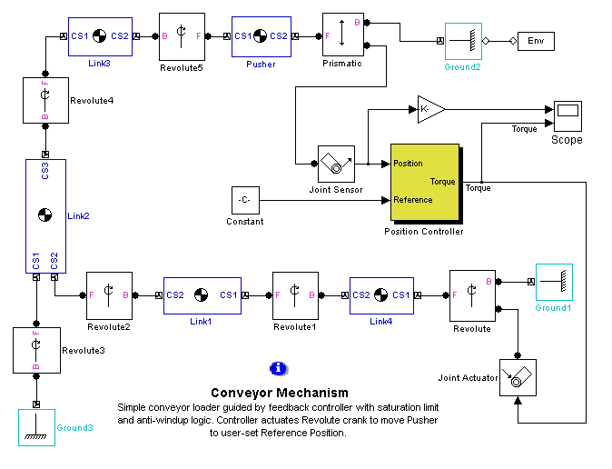
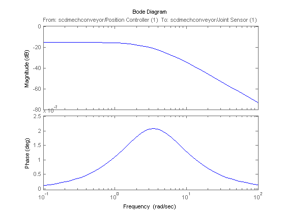

This demonstration introduces the use of the operating point search and snapshot features along with the linearization of a SimMechanics model. (Requires SimMechanics)
Open the model
open_system('scdmechconveyor');

Simulate to find a near steady state operating point
opsim = findop('scdmechconveyor',10);
The steady state operating point can now be found using the operating specification object initialized using the simulated operating point. For the steady state operating point search, the Analysis Type for the SimMechanics machine must be set to be in Trimming mode. See the SimMechanics documentation for details on this feature.
set_param('scdmechconveyor/Mechanical Environment','AnalysisType','Trimming') opspec = operspec('scdmechconveyor');
Initialize the values of the states of the operating point specification with the ones in the operating point opsim
opspec = initopspec(opspec,opsim);
To ensure that the constraints in the SimMechanics model are meet, the trim output port must be specified to be zero.
opspec.Outputs.y = zeros(8,1); opspec.Outputs.Known = ones(8,1);
For SimMechanics models, the operating condition search in some cases can converge to a steady state condition more quickly using a nonlinear least squares algorithm. This algorithm is available if the Optimization Toolbox is licensed. An iterative report of the search can also be displayed by using the LINOPTIONS command.
opt = linoptions('OptimizerType','lsqnonlin','DisplayReport','iter');
The steady state operating point can now be found using the FINDOP command.
[op,opreport] = findop('scdmechconveyor',opspec,opt);
Optimizing to solve for all desired dx/dt=0, x(k+1)-x(k)=0, and y=ydes. (Maximum Error) Block --------------------------------------------------------- (2.76766e-004) scdmechconveyor/Position Controller/H_inf Controller (2.54392e-012) scdmechconveyor/Position Controller/H_inf Controller (2.54392e-012) scdmechconveyor/Position Controller/H_inf Controller Operating condition specifications were successully met.
Display the final report
opreport
Operating Point Search Report for the Model scdmechconveyor.
(Time-Varying Components Evaluated at time t=0)
Operating condition specifications were successully met.
States:
----------
(1.) SimMechanics Block - scdmechconveyor/Revolute5
x: -0.172 dx: 1.22e-008 (0)
x: 1.22e-008 dx: -1.01e-006 (0)
(2.) SimMechanics Block - scdmechconveyor/Prismatic
x: 0.83 dx: -5.81e-008 (0)
x: -5.81e-008 dx: 4.83e-006 (0)
(3.) SimMechanics Block - scdmechconveyor/Revolute3
x: -0.881 dx: 6.39e-008 (0)
x: 6.39e-008 dx: -5.32e-006 (0)
(4.) SimMechanics Block - scdmechconveyor/Revolute1
x: 0.00175 dx: 1.71e-009 (0)
x: 1.71e-009 dx: -1.43e-007 (0)
(5.) SimMechanics Block - scdmechconveyor/Revolute
x: 0.103 dx: -7.64e-009 (0)
x: -7.64e-009 dx: 6.35e-007 (0)
(6.) scdmechconveyor/Position Controller/H_inf Controller
x: 1.5e-007 dx: -1.13e-005 (0)
x: 0.199 dx: -9.28e-007 (0)
x: 0.199 dx: -2.88e-008 (0)
x: 0.0743 dx: 1.26e-009 (0)
(7.) scdmechconveyor/Position Controller/Loopshaping Weight
x: 0.208 dx: -6.87e-007 (0)
x: 0.208 dx: -3.03e-008 (0)
x: 0.0775 dx: -3.01e-010 (0)
(8.) scdmechconveyor/Position Controller/Prefilter
x: 0.0103 dx: 1.39e-017 (0)
(9.) scdmechconveyor/Position Controller/inv(W)
x: -0.208 dx: 6.87e-007 (0)
x: -0.208 dx: 3.03e-008 (0)
x: -0.0775 dx: 3.01e-010 (0)
Inputs: None
Outputs:
-----------
(1.) scdmechconveyor/MSB Trimming Out
y: -2.78e-017 (0)
y: 0 (0)
y: 1.39e-017 (0)
y: 0 (0)
y: 0 (0)
y: 0 (0)
y: 0 (0)
y: 1.24e-024 (0)
Before linearization of the model can be completed, the Analysis Type for the SimMechanics model needs to be restored.
set_param('scdmechconveyor/Mechanical Environment','AnalysisType','Forward dynamics')
In this model the open loop plant model between the conveyor position and the torque command can be found using the following input and outputs:
io(1) = linio('scdmechconveyor/Joint Sensor',1,'out','on'); io(2) = linio('scdmechconveyor/Position Controller',1,'in');
Linearize the model.
sys = linearize('scdmechconveyor',op,io);
Use sminreal to remove the redundant states in the SimMechanics model and plot the model's Bode plot.
sysm = zpk(sminreal(sys)) bode(sysm)
Zero/pole/gain from input "scdmechconveyor/Position Controller (1)" to output "scdmechconveyor/Joint Sensor (1)":
-2.0818
-------------------
(s-3.481) (s+3.481)
